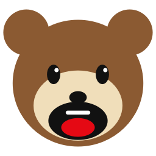

YapTr listens to whatever's playing on your PC and puts live English subtitles on top of it. Runs entirely on your own machine. No cloud, no account, no telemetry — and it's free.
Download for WindowsHow it works
It captures your desktop audio directly, so it works with any stream, video, or game. No microphone, no virtual audio cable, nothing to set up.
Speech recognition and translation both run locally. After the first launch it works completely offline — your audio never touches a server.
Subtitles show up in an always-on-top overlay you can click straight through and drag anywhere. Runs quietly from the system tray.
Before you download
YapTr isn't code-signed yet, so SmartScreen will say "Windows protected your PC." Click More info, then Run anyway. If you'd rather verify the file first, check it against the SHA-256 on the release page.
YapTr isn't a general-purpose translator, and that's a deliberate choice. The segmentation, timing, and model settings are all tuned specifically around Japanese speech, and that tuning is a big part of why it can keep up live. Other languages may come later, but only once they'd work properly — a half-tuned language would be worse than not offering it at all.
Expect the gist, not a polished script. Accuracy drops noticeably with background music, noise, or people talking over each other, and the model can occasionally invent plausible-sounding text for audio with no speech in it. Please don't rely on YapTr for anything important — legal, medical, financial, or safety-critical.
511 MB, because the translation model ships inside the installer. That's the trade: one larger download, in exchange for YapTr working offline the moment you install it instead of pulling gigabytes on first launch. Budget around 1.5 GB of disk space once installed, more if you turn on GPU mode.
YapTr runs on your CPU by default and always will unless you say otherwise. NVIDIA owners can switch on GPU acceleration for a big speedup; YapTr asks first, then downloads NVIDIA's CUDA runtime once (~1.5 GB). If anything goes wrong it quietly falls back to CPU.
Privacy
Audio and transcripts stay in memory and are never written to disk. YapTr makes no network requests at all beyond fetching the translation model, needs no administrator rights, and has no analytics of any kind built into it.
FAQ
Completely, and permanently. There is no paid tier, no trial period, no licence key, no account, and no feature held back for a "pro" version. You will never be asked for payment details, because there is nothing to buy. If you want to chip in there's a Ko-fi, but it unlocks nothing — the app is identical either way.
Yes. YapTr captures your PC's audio output rather than hooking into any particular site or app, so it subtitles whatever is currently making sound — a live stream in your browser, a VOD, a clip, a video call, or a game. Nothing needs to be installed on the streaming side.
Only to download it. The translation model ships inside the installer, so YapTr works fully offline from the first launch — which is also why the download is 511 MB rather than pulling gigabytes afterwards.
No. Translation happens on your own machine. Audio and transcripts stay in memory, are never written to disk, and YapTr makes no network requests beyond fetching the translation model. There's no account and no telemetry of any kind.
YapTr waits for a natural pause before translating a chunk of speech — it needs to hear a complete thought to translate it sensibly. That delay is the trade for coherent sentences instead of word salad.
It's adjustable. A low-latency chunk profile cuts speech into shorter pieces, and lowering the silence threshold makes it react faster at the end of sentences. An NVIDIA GPU helps a lot too.
No. YapTr runs on your CPU by default and always will unless you turn GPU mode on yourself. If you do have an NVIDIA card, enabling it gives a large speedup — YapTr asks permission first, downloads NVIDIA's CUDA runtime once, and falls back to CPU if anything goes wrong.
Not right now. YapTr is tuned specifically for Japanese speech — the segmentation and timing are built around it, and that tuning is a large part of why it can keep up live. Other languages may come later, but only once they'd work properly rather than badly.
Good enough to follow along, not good enough to quote. It's machine translation, and accuracy drops with background music, noise, or people talking over each other. Treat it as the gist rather than a script, and don't rely on it for anything that actually matters.
About
YapTr started as a personal itch: wanting to follow Japanese streams and videos as they happen, without waiting for someone else to subtitle them — and without piping audio from my desktop through somebody's cloud service to do it.
Everything followed from that second part. If the translation has to happen locally, it has to be fast enough to keep up locally, which is why so much of the work went into segmentation and timing rather than raw model size. It's also why YapTr does one language pair really deliberately instead of many of them loosely.
It's free, and there's no company behind it — no accounts, no analytics, nothing to upsell you, and no plan to change that. If it's useful to you, that's the whole point. If it gets something wrong, the Discord or the issue tracker are the fastest ways to tell me.
YapTr is free and stays that way — no paywall, ever. If it's saved you some time and you feel like chipping in, it genuinely helps.
Buy me a coffeeEntirely optional. Nothing in the app changes either way.